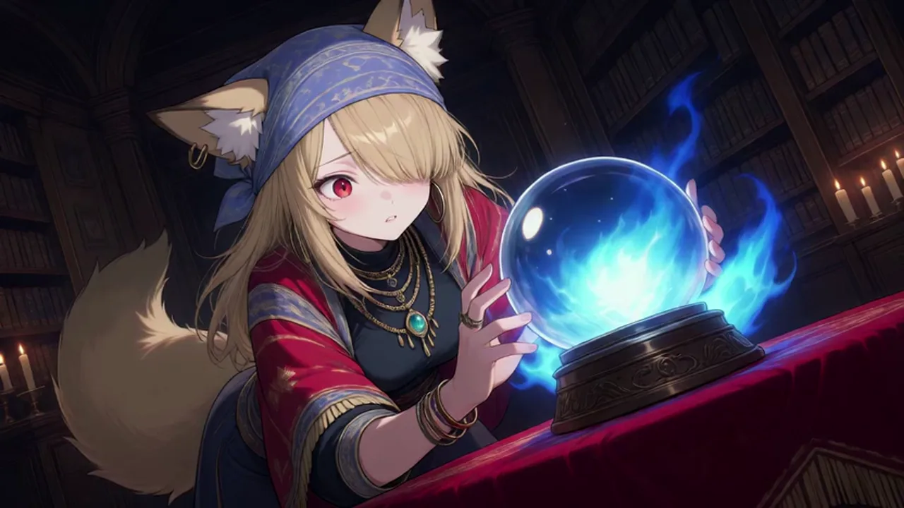

You step behind the red curtain at the Sakurai Cafe, late at night.
Light the candles
Consumes one message
She is reading. Try not to breathe on it.
Nothing tied here yet. Keep a fortune and it hangs on the branch.
What she looks at in your chat before she reads the cards.
Tap anything you never want in a fortune. It stays out even on the darkest settings, unless you ask for it in your own words on the slip.